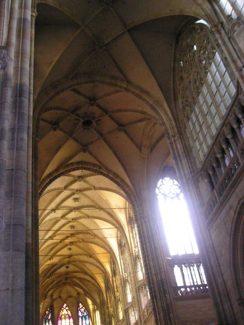
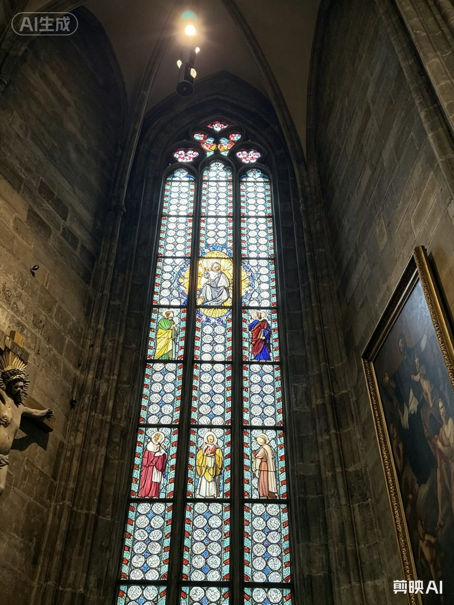
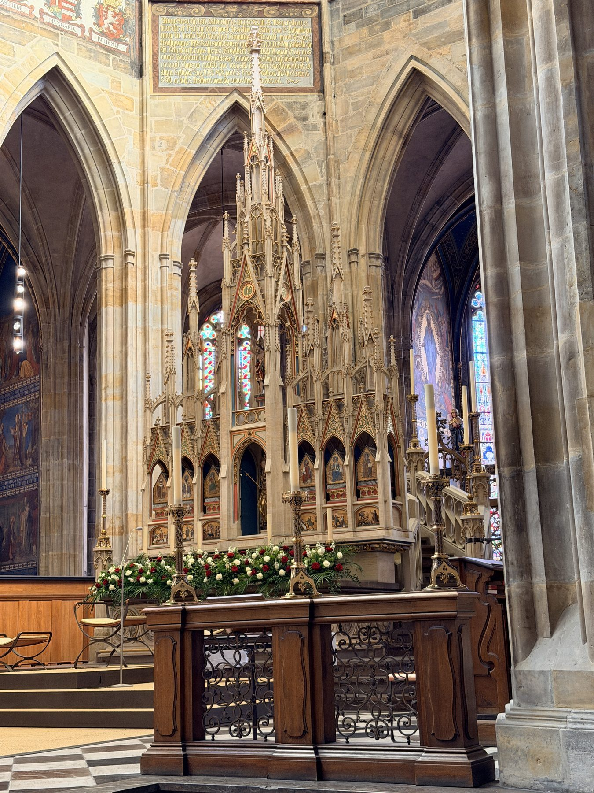
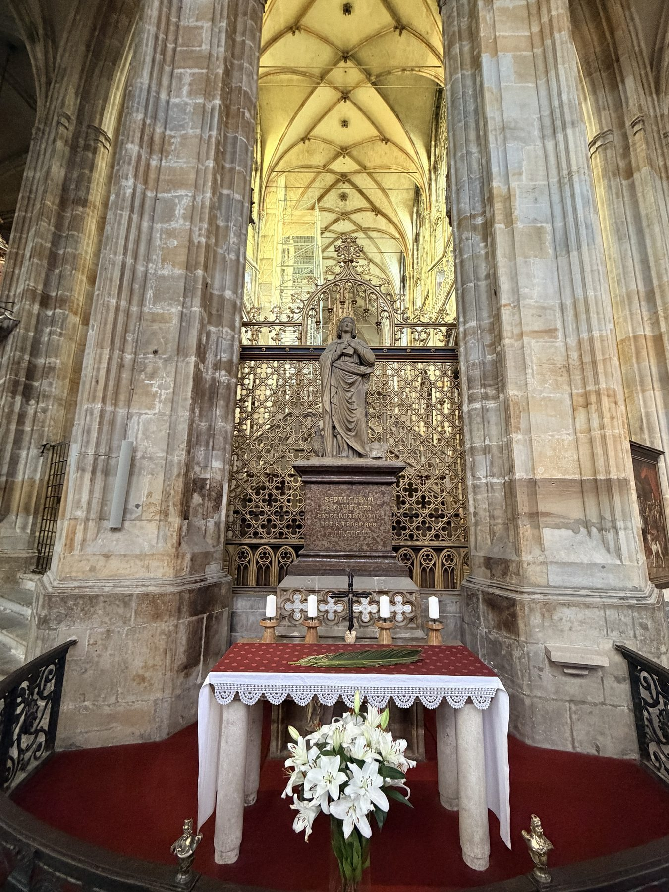
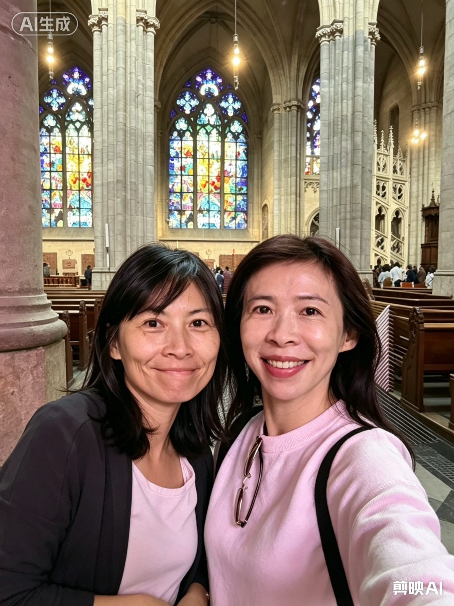
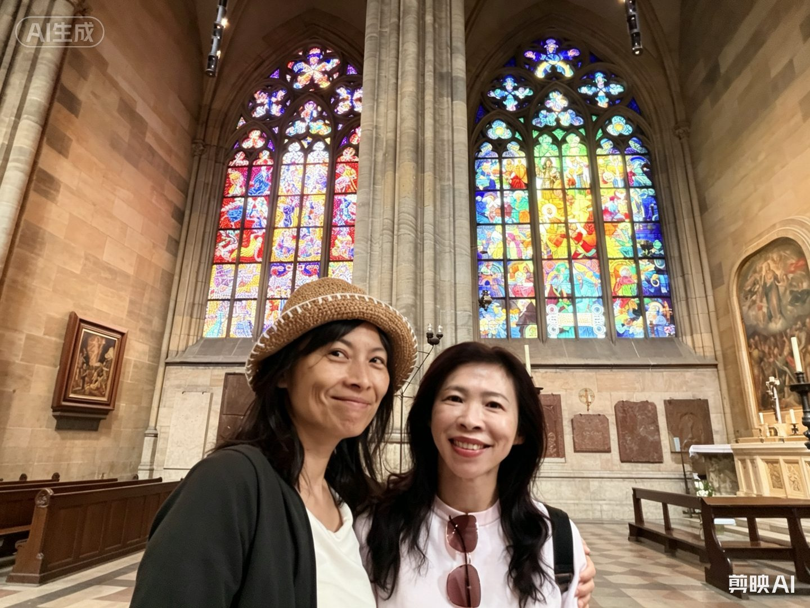

THE ARCHIVE OF ST. VITUS
城堡檔案室｜點擊任一檔案，解鎖塵封的記憶

CLASSIFIED
Subject: Gothic Vaults
Nave Ceiling

TOP SECRET
Stained Glass
600 Years of Light

EVIDENCE
High Altar
circa XIV Century

FIELD NOTE
Altar Window
Light & Stone
ARCHIVE
Nave Panorama
Stone Floor & Statues

PERSONAL
Mucha Window
Personal Memory

SUNSET LOG
Inside the Nave
Field Note
— 點擊任一檔案，解鎖塵封的診斷報告 —